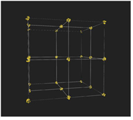
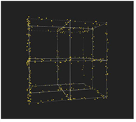
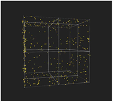
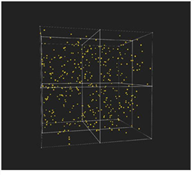
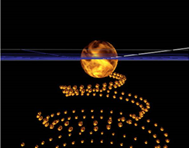
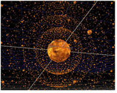
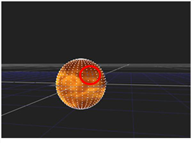
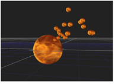

粒子发射器节点是最小粒子设置中的第一个也是唯一需要的节点。创建 ParticleEmitter 后，将其连接到查看器并单击 玩 在时间轴上，您将看到默认的粒子集发射 (从 3D 几何图形或点云，如果您已经连接)。然后，可以调整粒子发射器控件以更改粒子的显示方式:
| 1。 | 设置 通道 其中粒子被发射。通道 一个 和 b 是通道的任意名称，如果希望不同的粒子力节点对单独的通道产生影响，这些名称非常有用。 |
| 2. | 使用 从开始 场预滚或延迟第一个粒子发射的点。例如，粒子可以模仿已经落下的雪，而不是通过使用负值来显示落下的第一片雪花 从开始 框架。 |
| 3. | 选择粒子的发射顺序和速率。设置: |
• 发射 从 -选择 点 , 边缘 , 面孔 或 Bbox (边界框) 指定从三维对象或点云的哪个部分发射粒子。
|
 |
 |
| 从发出 > 点 | 从发出 > 边缘 |
|
 |
 |
| 从发出 > 面孔 | 从发出 > Bbox |
• 发射 秩序 -选择粒子发射的顺序:
• 随机 -产生随机发射顺序。
• 均匀 -同时发射所有粒子。
• 在 秩序 -以粒子的倍数发射粒子 排放率 。例如，一个 排放率 2 的可以一次从两个点、边或面发射。
|
 |
 |
| 按顺序发射的粒子。 | 粒子发射均匀。 |
• 随机化类型 -选择是否随机发射粒子。选择 无随机方向 对于基于发射对象法线的特定方向, 随机方向 对于随机选择的初始方向，或 向外随机 对于随机选择的方向 (取决于 从发出 选择):
• Bbox -粒子从中心随机移动。
• 点 , 边缘 ,和 面孔 -粒子从原点随机移动，但距离最近的法线不超过 90 度。
• 排放 费率 -选择每帧发射的粒子数。这是一个确切的数字，它受到 费率 通道 。如果通道处于不同的值，发射率也会增加或减少。
• 仅从选定点发射 -指定是从对象发射粒子，还是使用 GeoSelect 节点从对象的选定顶点发射粒子。也可以使用当前的任何法线信息从 PositionToPoints 点云中的选定点发出。
请参阅 3D 选择工具 欲了解更多信息。
|
 |
 |
|
使用选定的顶点
上游 GeoSelect 节点。 |
仅从
选定的顶点。 |
• 费率 变异 -指定发射粒子的变化范围。如果将其设置为零，粒子将以恒定的偶数发射。
• 费率 通道 -选择要发射粒子的特定通道。取消选中此选项与选择 “无” 相同，在这种情况下，粒子将发射到所有通道。例如，如果您从具有斜坡纹理的卡节点发射粒子，则它以更高的速率从斜坡的灯光部分发射粒子 (值更接近 1) 比从黑暗部分 (值更接近 0)。
| 4. | 设置粒子的颜色和通道。输入: |
• 颜色 -为粒子选择颜色。如果您不使用 粒子 输入。
• 颜色 从 纹理 -检查用几何纹理中的颜色着色粒子。如果不选中此选项，粒子只能从自己的纹理获得颜色。
• 通道 -选择要将粒子应用于的通道。默认情况下，粒子被发射到通道 A. 通道 一个 和 b 通道有任意名称，如果希望不同的粒子发射器节点或其他粒子力节点对单独的通道产生影响，这些名称非常有用。这方面的一个例子可能是，如果你想要两个粒子发射器节点发射粒子，一个到 一个 通道，其他 b 通道，所以在你的粒子流中，你可以对一组特定的粒子施加效果。
| 5. | 选择希望粒子存在的时间。设置: |
• 最大 寿命 -指定帧中粒子的最大寿命。
• 最大 寿命 范围 -调整粒子寿命变化的范围。如果将其设置为 0，则所有粒子都具有相同的生命周期。
• 寿命 通道 -选择要用于调整生命周期的输入几何纹理的通道。例如，如果要从生命周期通道中具有渐变纹理的卡片节点发射粒子，则从渐变的较浅部分发射粒子 (值更接近 1) 将有一个生命周期值更接近，在设置 最大寿命 比从黑暗部分发射的粒子 (值更接近 0)。
• 半衰期 -选择发射粒子数减半的帧数。
| 6. | 调整粒子的速度和旋转。设置: |
• 速度 -指定粒子移动的初始速度。
• 速度 范围 -调整您希望粒子速度变化的范围。如果将其设置为 0，粒子之间的速度不会发生变化。
• 速度 通道 -选择要用于调整速度的输入几何纹理的通道。例如，如果您从具有斜坡纹理的卡节点发射粒子，则它会以更高的速度从斜坡的灯光部分发射粒子 (值更接近 1) 比从黑暗部分 (值更接近 0)。
• 旋转 速度 -调整每个粒子围绕其单个 y轴旋转的初始速度。Y 轴指向粒子最初发射的方向，然后保持不变 (除非使用 ParticleMotionAlign 节点更改其方向)。从几何对象发射粒子时，旋转速度最有用。
• 旋转 速度 范围 -调整随机变化的比例 旋转速度 价值。值 0 表示旋转速度值为设定值，值 1 表示非常随机。
• 旋转 速度 通道 -选择要用于调整旋转速度的输入几何纹理的通道。例如，如果从具有斜坡纹理的卡片发射，则从斜坡的光线部分发射的粒子的旋转速度 (值更接近 1) 大于从黑暗部分发射的那些 (值更接近于 0)。
• 转移 速度 -调整此选项以将初始发射器的速度传输到粒子。如果将其设置为 0，则不会向生成的粒子传输速度。在值为 1 时，全速从始发粒子转移。
• 转移窗口 -调整时间，以帧为单位，向前或向后看，以确定应该传输到粒子的速度。
| 7. | 修改粒子的大小和质量。设置: |
• 尺寸 -指定每个粒子的初始大小。
• 尺寸 范围 -指定颗粒大小变化的范围。
• 尺寸 通道 -选择要用于调整粒子大小的几何纹理的通道。例如，如果您从在大小通道中具有斜坡纹理的卡片节点发射粒子, 从渐变的较浅部分发射的粒子的大小 (值更接近于 1) 大于从较暗部分发射的粒子的大小 (值更接近于 0)。
• 质量 -调整每个粒子的初始质量。只有在对粒子施加力 (如 ParticleDirectionalForce 节点生成的力) 时，粒子的质量才相关。
• 质量 范围 -调整以产生质量值的随机变化。简单地说，0 值意味着粒子的质量是由 质量 控制，而值为 1 意味着它是非常随机的。
• 质量 通道 -选择要用于调整质量的输入几何纹理的通道。例如，如果从质量通道中具有斜坡纹理的卡片发射，则来自斜坡的光线部分 (值更接近 1) 的粒子具有更高的 质量 值比从黑暗部分 (值更接近 0)。使用此控件，可以根据输入几何体的纹理从不同区域发射具有不同质量的粒子。
• 传播 -调整您希望粒子在其生命周期内向不同方向扩散的程度。默认情况下，这将形成一个围绕发射方向的圆锥体。如果将其设置为零，则每个粒子都有一个直线轨迹。
| 8。 | 修改粒子受粒子发射器输入影响的方式。调整: |
• 输入 秩序 -如果你使用多个粒子输入，你可以选择哪个 粒子 输入 Nuke 创建粒子时应选择。选择 随机 随机选择一个输入，或者 在 秩序 以数字顺序旋转输入。
• 开始 在 -选择的框架 粒子 输入应该是每个新粒子的表示。选择 首先 为每个新粒子拾取粒子输入的第一帧。选择 在 秩序 从每个新粒子的输入中拾取连续帧。选择 当前 来拾取粒子发射的帧。选择 随机 为每个新粒子选择随机输入帧
• 限制 到 范围 -将粒子输出限制为表示的帧速率，当 在 秩序 或 当前 被选中。
• 前进 -使用它来确定粒子在发射后是否应该设置动画。选择 常数 在粒子的整个生命周期中保持相同的表示。选择 在步骤中 -逐帧对表示进行动画处理。选择 随机 为一个又一个随机帧的表示设置动画。
| 9. | 不同结果的范围控制的 随机种子 字段。输入范围控件中使用的随机数 (如 最大寿命范围 ) 达到稍微不同的效果。 |
提示: 当您为它可能需要的任何粒子控件设置大值时 Nuke 几分钟来计算结果。在这种情况下，进度条显示为 取消 如果需要，可以使用按钮取消计算。
|
|